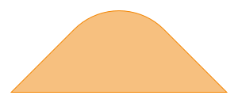
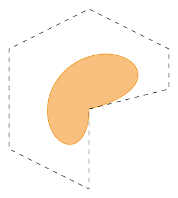
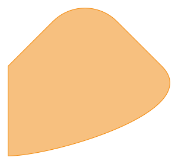
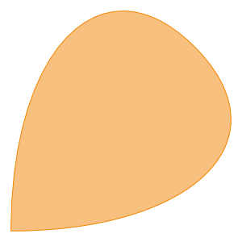
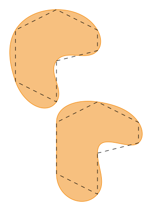

gdstk.Curve
- class gdstk.Curve(xy, tolerance=0.01)
Curve object for construction of complex polygons.
The methods are loosely based on the definition of SVG paths.
- Parameters:
xy – Curve starting point. It can be a sequence of 2 numbers or a single complex value.
tolerance – Tolerance used for calculating the polygonal approximation of the curve.
Examples
>>> curve = gdstk.Curve((3, 4), tolerance=1e-3) >>> curve.segment((1, 1), True) >>> curve.turn(1, -numpy.pi / 2) >>> curve.segment((1, -1), True) >>> polygon = gdstk.Polygon(curve.points())
Methods
arc(radius, initial_angle, final_angle[, ...])Append an elliptical arc to this curve.
bezier(xy[, relative])Append a Bézier curve to this curve.
commands(*args)Parse commands to append sections to this curve.
cubic(xy[, relative])Append cubic Bézier curves to this curve.
cubic_smooth(xy[, relative])Append smooth cubic Bézier curves to this curve.
horizontal(x[, relative])Append horizontal segments to this curve.
interpolation(points[, angles, tension_in, ...])Append a smooth interpolating curve through the given points.
parametric(curve_function[, relative])Append a parametric curve to this curve.
points()Return the polygonal approximation of this curve.
quadratic(xy[, relative])Append quadratic Bézier curves to this curve.
quadratic_smooth(xy[, relative])Append smooth quadratic Bézier curves to this curve.
segment(xy[, relative])Append straight segments to this curve.
turn(radius, angle)Append a circular turn to this curve.
vertical(y[, relative])Append vertical segments to this curve.
Attributes
Tolerance used for calculating the polygonal approximation of the curve.
- arc(radius, initial_angle, final_angle, rotation=0) self
Append an elliptical arc to this curve.
- Parameters:
radius (number or sequence[2]) – Circular arc radius or elliptical arc radii.
initial_angle – Starting angle (in radians).
final_angle – Ending angle (in radians).
rotation – Arc rotation.
Examples
>>> curve = gdstk.Curve((-0.6, 0), tolerance=1e-3) >>> curve.segment((1, 0), True) >>> curve.arc(1, 0, numpy.pi / 2) >>> polygon_1 = gdstk.Polygon(curve.points())
>>> curve = gdstk.Curve((0.6, 0), tolerance=1e-3) >>> curve.segment((1, 0), True) >>> curve.arc((2 ** -0.5, 0.4), -numpy.pi / 4, 3 * numpy.pi / 4, ... -numpy.pi / 4) >>> polygon_2 = gdstk.Polygon(curve.points())
- bezier(xy, relative=False) self
Append a Bézier curve to this curve.
- Parameters:
xy (sequence of points) – Curve control points.
relative – If
True, coordinates are relative to the last point.
Examples
>>> points = [(4, 1), (4, 3), (0, 5), (-4, 3), (-4, -2), (0, -4), ... (0, 0)] >>> curve = gdstk.Curve((0, 0)) >>> curve.segment(points) >>> control_poly = gdstk.Polygon(curve.points(), datatype=1) >>> curve = gdstk.Curve((0, 0), tolerance=1e-3) >>> curve.bezier(points) >>> polygon = gdstk.Polygon(curve.points())
- commands(*args) self
Parse commands to append sections to this curve.
Commands are single characters followed by a pre-defined number of numerical arguments, according to the table below:
Command
Primitive
Arguments
L/l
Line segment
x, y
H/h
Horizontal segment
x
V/v
Vertical segment
y
C/c
Cubic Bézier
x0, y0, x1, y1, x2, y2
S/s
Smooth cubic Bézier
x0, y0, x1, y1
Q/q
Quadratic Bézier
x0, y0, x1, y1
T/t
Smooth quadratic Bézier
x, y
a
Circular turn
rad, ang
A
Circular arc
rad, ang0, ang1
E
Elliptical arc
rad0, rad1, ang0, ang1, rot
Uppercase commands assume that coordinates are absolute, whereas the lowercase versions assume they are relative to the previous endpoint.
Notes
The meaning and order of the arguments of all commands are identical to the corresponding method.
Examples
>>> curve = gdstk.Curve((0, 0), tolerance=1e-3) >>> curve.commands("l", 1, 1, "a", 1, -numpy.pi / 2, "l", 1, -1, ... "S", 1, -2, 0, -2) >>> polygon = gdstk.Polygon(curve.points())
- cubic(xy, relative=False) self
Append cubic Bézier curves to this curve.
- Parameters:
xy (sequence of points) – Each set of 3 consecutive points is interpreted as 2 control points and an end point.
relative – If
True, coordinates are relative to the last point.
Examples
>>> curve = gdstk.Curve((0, 0), tolerance=1e-3) >>> curve.cubic([(1, -2), (2, -2), (3, 0)]) >>> curve.cubic([(2.7, 1), (1.8, 1), (1.5, 0), ... (1.3, -0.2), (0.3, -0.2), (0, 0)]) >>> polygon = gdstk.Polygon(curve.points())
- cubic_smooth(xy, relative=False) self
Append smooth cubic Bézier curves to this curve.
The first control point is assumed to be the reflection of the last control point of this curve with respect to its end point.
- Parameters:
xy (sequence of points) – Each set of 2 consecutive points is interpreted as the second control point and an end point.
relative – If
True, coordinates are relative to the last point.
Examples
>>> curve = gdstk.Curve((0, 0), tolerance=1e-3) >>> curve.cubic([1 + 0j, 2.5 + 1.5j, 2 + 2j]) >>> curve.cubic_smooth([1j, 0j]) >>> polygon = gdstk.Polygon(curve.points()) >>> polygon = gdstk.Polygon(curve.points())
- horizontal(x, relative=False) self
Append horizontal segments to this curve.
- Parameters:
x (number or sequence) – End point x coordinates.
relative – If
True, coordinates are relative to the last point.
- interpolation(points, angles=None, tension_in=1, tension_out=1, initial_curl=1, final_curl=1, cycle=False, relative=False) self
Append a smooth interpolating curve through the given points.
Use the Hobby algorithm [1] to calculate a smooth interpolating curve made of cubic Bezier segments between each pair of points. Angle and tension parameters can be specified at each point, and the curve can be open or closed.
- Parameters:
points (sequence[N] of points) – Vertices in the interpolating curve.
angles (
Noneor sequence[N + 1]) – Tangent angles at each point (in radians). Angles defined asNoneare automatically calculated.tension_in (number or sequence[N + 1]) – Tension parameter when arriving at each point. One value per point or a single value used for all points.
tension_out (number or sequence[N + 1]) – Tension parameter when leaving each point. One value per point or a single value used for all points.
initial_curl – Ratio between the mock curvatures at the first point and at its neighbor. A value of 1 renders the first segment a good approximation for a circular arc. A value of 0 will better approximate a straight segment. It has no effect for closed curves or when an angle is defined for the first point.
final_curl – Ratio between the mock curvatures at the last point and at its neighbor. It has no effect for closed curves or when an angle is defined for the first point.
cycle – If
True, calculates control points for a closed curve, with an additional segment connecting the first and last points.relative – If
True, coordinates are relative to the last point.
Examples
>>> points = [(4, 1), (4, 3), (0, 5), (-4, 3), (-4, -2), (0, -4)] >>> curve = gdstk.Curve((0, 0)) >>> curve.segment(points) >>> control_poly_1 = gdstk.Polygon(curve.points(), datatype=1) >>> curve = gdstk.Curve((0, 0), tolerance=1e-3) >>> curve.interpolation(points, cycle=True) >>> polygon_1 = gdstk.Polygon(curve.points())
>>> half_pi = numpy.pi / 2 >>> angles = [half_pi, None, None, None, -half_pi, -half_pi, None] >>> curve = gdstk.Curve((4, -9)) >>> curve.segment(points, relative=True) >>> control_poly_2 = gdstk.Polygon(curve.points(), datatype=1) >>> curve = gdstk.Curve((4, -9), tolerance=1e-3) >>> curve.interpolation(points, angles, cycle=True, relative=True) >>> polygon_2 = gdstk.Polygon(curve.points())
- parametric(curve_function, relative=True) self
Append a parametric curve to this curve.
- Parameters:
curve_function (callable) – Function that defines the curve. Must be a function of one argument (that varies from 0 to 1) that returns a 2-element sequence or complex with the coordinates of the curve.
relative – If
True, the return values ofcurve_functionare used as offsets from the current path position, i.e., to ensure a continuous path,curve_function(0)must be (0, 0). Otherwise, they are used as absolute coordinates.
Examples
>>> pi = numpy.pi >>> def top(u): ... x = 4 * u ... y = 1 - numpy.cos(4 * pi * u) ... return (x, y) ... >>> curve = gdstk.Curve((-2, 0), tolerance=1e-3) >>> curve.parametric(top) >>> curve.parametric( ... lambda u: (4 - 2 * u ** 0.5) * numpy.exp(-1.5j * pi * u) - 4 ... ) >>> polygon = gdstk.Polygon(curve.points())
- points() numpy.ndarray
Return the polygonal approximation of this curve.
Examples
>>> curve = gdstk.Curve((0, 0)) >>> curve.segment([(1, 0), (0, 1)]) >>> curve.points() array([[0., 0.], [1., 0.], [0., 1.]])
- quadratic(xy, relative=False) self
Append quadratic Bézier curves to this curve.
- Parameters:
xy (sequence of points) – Each set of 2 consecutive points is interpreted as control point and an end point.
relative – If
True, coordinates are relative to the last point.
See also
- quadratic_smooth(xy, relative=False) self
Append smooth quadratic Bézier curves to this curve.
The control point is assumed to be the reflection of the last control point of this curve with respect to its end point.
- Parameters:
xy (sequence of points) – Curve end points.
relative – If
True, coordinates are relative to the last point.
See also
- segment(xy, relative=False) self
Append straight segments to this curve.
- Parameters:
xy – Segment end point. It can be a sequence of 2 numbers or a single complex. Multiple segments can be constructed by using a sequence of points.
relative – If
True, coordinates are relative to the last point.
Examples
>>> curve = gdstk.Curve((1, 0)) >>> curve.segment((0, 1)) >>> curve.segment([0j, -1+0j]) >>> curve.segment([(0, -1), (2, -1)], True) >>> polygon = gdstk.Polygon(curve.points())
- tolerance
Tolerance used for calculating the polygonal approximation of the curve.
Examples
>>> curve = gdstk.Curve((-2.5, 0), tolerance=1e-1) >>> curve.arc((2, 3), 0, numpy.pi) >>> polygon_1 = gdstk.Polygon(curve.points()) >>> print(polygon_1.size) 7 >>> curve = gdstk.Curve((2.5, 0), tolerance=1e-3) >>> curve.arc((2, 3), 0, numpy.pi) >>> polygon_2 = gdstk.Polygon(curve.points()) >>> print(polygon_2.size) 62
- turn(radius, angle) self
Append a circular turn to this curve.
- Parameters:
radius – Circular arc radius.
angle – Turning angle. Positive values turn counter clockwise and negative values, clockwise.
- vertical(y, relative=False) self
Append vertical segments to this curve.
- Parameters:
y (number or sequence) – End point y coordinates.
relative – If
True, coordinates are relative to the last point.